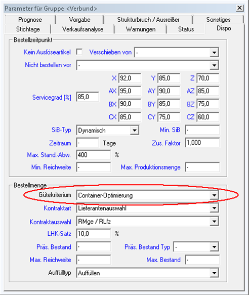

Containeroptimierung
Eine Containeroptimierung ermittelt eine kostengünstige Container-Kombination für eine berechnete (Auslöse-)Menge und ggf. das Aufrunden dieser Container-Kombination. Damit die Container-Optimierung verwendet werden kann, muss das Gütekriterium in der Verbundgruppe auf „Container-Optimierung“ eingestellt sein.

Einstellung in den Parametern
Diese werden auch in den Konditionen angelegt unter Einheiten > Konditionen Mengen/ Preise/ Kosten.

Einstellung in den Konditionen
Wenn auch LCL-Container berücksichtigt werden sollen, muss hierfür eine zusätzliche Zeile unter „Mengen, Preise, Kosten“ eingefügt werden:

LCL steht für "Less than Container Load" und bezeichnet eine Versandmethode, bei der sich mehrere Versender (Lieferanten) einen Container teilen.
Hier muss als Bezug „Vol. Brutto“ ausgewählt werden. Zudem ist – wie oben – das Mix-Flag zu setzen und entweder „Zus. Lieferantenkosten“ oder „Zus. eigene Kosten“ auszuwählen.
Nach dem Auffüllen wird die Gesamtbestellung entsprechend der zuvor bestimmten optimalen Containerkombination auf die einzelnen Container aufgeteilt. Dies erfolgt folgendermaßen:
- Falls ein LCL-Container enthalten ist, werden die Bestellpositionen nach absteigender Dichte sortiert und in den Container geladen, bis das Volumen erreicht ist.
- Positionen und Container werden nach einem Kriterium (z. B. Dichte oder Restdichte) sortiert.
- Verteilung der Positionen erfolgt optimierungseinheitsweise oder stellplatzweise auf Container.
- Nach jeder Zuordnung wird die verbleibende Restdichte berechnet und die Reihenfolge neu bestimmt.
- Falls eine Position in keinen Container mehr passt, wird der Container mit geringster Volumenüberschreitung gewählt. Gewicht kann überschritten werden, aber nicht Stellplatzkapazität.